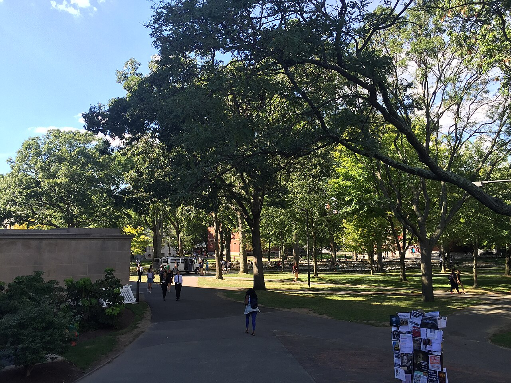

Fulbright Scholarship Pakistan (USEFP): Categories, GRE and English Rules, Deadlines
Last updated: October 2026. Dates below name their cycle. Verify every date on usefp.org before you apply.

Fulbright is the United States government's flagship exchange programme. In Pakistan it is administered by the United States Educational Foundation in Pakistan (USEFP), and the main route for students is the Fulbright Degree programme: fully funded master's and PhD study in the United States. The award typically covers tuition, living costs, airfare and health insurance — confirm the current award terms on usefp.org, since they are set per cycle.
Fulbright Pakistan has one feature that surprises many applicants: the English test comes late, but the GRE comes first. Get that order wrong and you will waste months.
Categories: Master's and PhD
- Master's: you need a four-year bachelor's degree, or a combination of bachelor's and master's study totalling 16 years of education.
- PhD: you need a master's, MPhil or equivalent degree, totalling at least 18 years of education.
- Separate programmes exist for established academics and professionals (for example the Fulbright Scholar programme, which has its own rules and, for recent cycles, its own deadline). This page covers the Degree programme for students; check usefp.org if you are a PhD holder or senior professional.
Applicants must be Pakistani citizens residing in Pakistan throughout the application and selection process.
The GRE rule: mandatory, and it takes the longest
Every Degree-programme applicant must take the GRE General Test before applying. Under the current scoring scale, USEFP asks for at least 145 in each section — verbal and quantitative — with a higher score expected in the section closest to your field. A strong overall score with one section below the floor is a weak position, so prepare both sections.
When you take the test, send scores using USEFP's code (9388) and the Institute of International Education's code (2326), which handles placement for Fulbright students after selection. Book your test date early enough that the official score report reaches USEFP before the deadline — the GRE is the step that takes longest, so start there.
Work experience is generally not required for the Degree programme, with the exception of fields such as MBA and public policy, where two years is expected. Check the current cycle's field guidance on usefp.org.
The English rule: TOEFL later, not IELTS now
USEFP does not ask for an English test score with the initial application, and it does not accept IELTS for this programme. Candidates who are shortlisted and selected are asked to take TOEFL. That order is good news if your GRE preparation is eating your time — but do not ignore English entirely, because a weak TOEFL after selection can still damage your placement. See our IELTS and English test guide for how this differs across programmes.
Deadlines, and the October date trap
- 2027 cycle: applications opened 20 February 2026 and closed 1 April 2026.
- 2028 round: not announced yet. Past rounds have closed in different months, so watch usefp.org rather than assuming a date.
- The trap: a Fulbright deadline of 6 October 2026 circulates widely in Pakistan. That date belongs to the Fulbright U.S. Student Program, which sends American citizens abroad. A Pakistani citizen cannot apply there. Pakistanis apply only through USEFP.
A full application needs the online form, three reference letters and scanned transcripts, all submitted online. Incomplete applications are not considered.
How selection works
- Submit the complete online application with your GRE score before the deadline.
- Shortlisted candidates are asked for TOEFL and invited to interview.
- Selected candidates go through placement, coordinated through the programme, and finalise their grants. Dependants cannot accompany grantees under this programme's terms — confirm the current wording on usefp.org if this affects you.
Because placement is coordinated after selection, your application should focus on field fit, academic strength and a clear study objective, not on naming a dream university.
For Indian students
India has a different Fulbright administrator and different rules, so do not use the Pakistani dates or test rules above. In India, Fulbright is run by the United States-India Educational Foundation (USIEF) as the Fulbright-Nehru fellowships. The best-known categories are the Master's Fellowships (up to two years), Doctoral Research Fellowships (typically six to nine months of dissertation research in the US), Postdoctoral Research Fellowships, and Academic and Professional Excellence Fellowships. The Master's fellowship asks for a US-equivalent bachelor's degree with at least 55% marks, at least three years of full-time paid work experience relevant to your field, and an application in a restricted field list; employees of the Government of India and state governments are not eligible. Deadlines vary by fellowship and cycle — the Master's 2026–27 deadline was 14 May 2025, and a new Master's cycle had not been verified as of October 2026. Check the current cycle, field list and deadline on usief.org.in before drafting anything.